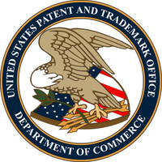
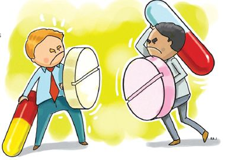
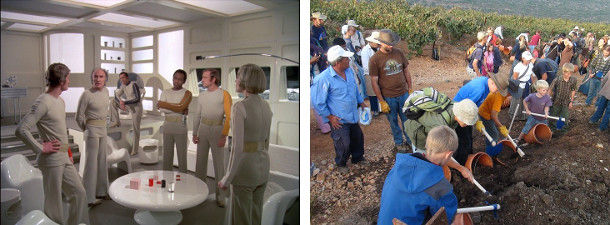

It turns out that the hunches of these executives is correct. There's clear evidence that without patents innovation comes to a halt. As an example let's look at the software patents. The software patents became legal in 1981.2 One picture is worth thousand words. Have a look how much boost has this given to the evolution of the GUIs since that year (make sure to note the year of the screenshot to infer the speed of innovation): 3

There are some niche domains where the companies don't use the patent system to encourage the innovation in their area and thus its innovation rate is abysmal. For an example let's look at the pornographic industry. If you issue a Google Patent Search with the keyword "pornography" you get only about 46 400 results.4 This number suggest a very low innovation rate compared to other industries.5 This is a quite reliable metric, just look how sluggish the innovation was in the porn industry: 6,7
Do you think Bill Gates would have managed to accumulate so much wealth and build so big monopoly as he did without our beloved patents? Just hear his opinion about them from 1991: 11
If people had understood how patents would be granted when most of today's ideas were invented, and had taken out patents, the industry would be at a complete standstill today. I feel certain that some large company will patent some obvious thing related to interface, object orientation, algorithm, application extension or other crucial technique. If we assume this company has no need of any of our patents then they have a 17-year right to take as much of our profits as they want. The solution to this is patent exchanges with large companies and patenting as much as we can.

Innovation is a hard procedure and so the patent system rewards the innovators with all the riches. With lots of money the company can buy lots advertising to force the wannabe imitators out of media focus and also with loads of money makes it possible for lobby the politicians for the better future for all of us (the innovators are smart people after all). With lobbying they don't only improve laws to make sure the bastard imitators can't enter the industry12 but every well spent dollar on lobbying returns sometimes even up to $220.13 And how much money is spent on lobbying you ask? Here are some stats: 14

What would happen without patents? There would be lots of smaller companies all struggling with competition and they wouldn't have any other option other than spend their all their money on innovation.15 And every innovation would be public domain so the shady imitators wouldn't even need to spend money on R&D, as expertise will be public for anyone to grab. Just look how well you and everybody else automatically understand the intricacies of the Linux kernel just because it is open source.
And not only that but not many companies could grow large. If nobody has access to a large share of a nation's wealth then that means the wealth is well distributed. That is clearly a sign of an economic situation gone wrong.
And how would a poor inventor get some returns on his invention if not from patents? Just look how complicated process the steam engine engineers followed after Watt's patent for the steam engine expired: 16
Because of uncertainty in coal mining, a modest number of investors engaged in mutual insurance by each owning shares in a broad cross-section of mines. As is the case with shareholders in publicly traded companies, this means that each investor was able to capture the benefit of innovation, regardless of which particular firm or engineer made the improvement. And indeed, the employment contracts of engineers reflected these incentives. Engineers were employed on a contract basis by particular mines to improve engines, with the understanding that they would publish their results. Investors captured the common gains to all mines from each innovation, while engineers, having signed away the right to monopolize their invention, profited instead from their fees and by the advertising value of publicizing their innovations.
Every innovation is product of a long and hard work.17 This is why you can't find instances when two independent people invent the same thing independently.18 Without the patent system no sane inventor would have any motivation to innovate. In the reality though you can find some insane people who decided not to patent their inventions.
For example Tim Berners-Lee (left picture) decided not to patent his creation the World Wide Web. Now imagine how better off would every one be when every time you accessed a website you would need to pay one cent to Tim. Tim would be much richer, there would much more websites and the whole world wide web would be much more innovative. Maybe the dot-com bubble would be still growing! What a wasted opportunity! 19
Or for another example look at Dave Smith (right picture), the inventor of the well known MIDI. This technology used in many areas of the sound/music industry ranging from various electronic instrument communication protocols to playing back ringing tones on your ancient phones. This technology is so widely used that if he would have patented it he would be a billionaire. His reason for not patenting? "We wanted to be sure we had 100% participation, so we decided not to charge any other companies that wanted to use it." What a narrow world view! 20

For innovative ideas like Amazon's one click buy invention 21,22 which pushes the envelope of the technology the only way to retain its innovative value is to use the patent system. But there are many more innovative ideas which need a defense by laws, here's a sampling: 23

Silly and obvious inventions like SpaceX's rockets are not patented30, people don't even bother with them. Because of this SpaceX will soon go bankrupt after the imitators start to copy their inventions, as every other company which has not patented its ideas, like:

And we haven't even talked about the USPTO spendings of $3 billions of our tax dollars just to keep our beloved patent office working.38
According a survey of medical doctors these fifteen inventions are the most important inventions of the medical industry:39
Penicillin, x rays, tissue culture, ether (anaesthetic), chlorpromazine, public sanitation, germ theory, evidence based medicine, vaccines, the pill, computers, oral rehydration therapy, DNA structure, monoclonal antibody technology, smoking health risk.
Most of these inventions are patented. More precisely only the chlorpromazine40 and the pill41 are patented. The remaining boring inventions usually come from biotech companies and universities.42 Can you imagine how much sicker we would be if all these patented inventions had not been available to us because the innovators hadn't had the motivation to invent them? And how much more people would have avoided polio if the polio vaccine had been patented by its inventor, Jonas Salk?43
There is just no question whether patents improve medicine or not, just look at this report:44
Research by Sandy Weisburst and mentored by [Scherer] showed, for example, that Italy, with a vibrant generic drug industry, did not achieve any significant increase in the discovery of innovative drugs during the first decade after the Italian Supreme Court mandated the issue of pharmaceutical product patents.

All of this researching of new drugs cost a lot of money45 so the whole pharma industry is heavily subsidized46 and receives quite hefty portions of your well earned dollars.47 Then most of the pharma industry's income is spent on advertisement.48,49 The little remaining money is spent on R&D of which 60 percent is spent on development of "me-too" drugs of other companies to stay in business but with different recipe to avoid patenting issues.50 How is this not useful for the society? How could it even work without patents? Are we gonna give away expensive Nobel prizes for useful innovations or what? 51
Without all the regulations most people in the United States of America would be clueless - they wouldn't know what to do with themselves! So this means we need lot of regulations (also known as central planning). Even small regulations can improve the economy by great lengths. For an example just look at Massachusetts Route 128.52 The well known Route 128 was a place where the boys and girls from Harvard and MIT went to work in or start their own companies. It was one of the America's most innovative areas in the technology/computer industries. It also had regulations against job hopping so if somebody left/was fired from a company then he/she couldn't go to/start a different company in the same tech sector.53 Other areas like Silicon Valley (of which you've probably never heard) had no such restrictions and look how the place rotted away just to become another deserted place on Earth.54
This demonstrates that our US government knows what's best for us and that is more regulations. The patent laws had a slow start but fortunately they are catching up: 55
Unfortunately still over 90% of the most innovative products from the past few decades were not patented.56 This means one thing only: we need more patent regulations! Here are some examples which are currently under consideration by the general public:
So clearly there are no downsides to patents. Some people still would rather have no patents at all. These people want to live in a world without patents, where there's no technology, everything is freely copied, people have to work a lot, and everybody is sick because nobody can cure us.

Isn't a technocratic world better where our rights are defended, have high tech toys, and don't need to live a healthy life because the corporations can cure us from any problems?
So take action! Call your representative and ask him for stronger patent laws!
1 "70% of business leaders representing more than 30 industries say that patents are good for innovation", http://www.intellectualventures.com/assets_docs/10PatentPerceptionsBusted_1-pager.pdf
2 "In 1981, the Supreme Court stated that [...] a claim is patentable if it contains a mathematical formula [and] implements or applies the formula in a structure or process which, when considered as a whole, is performing a function which the patent laws were designed to protect", https://en.wikipedia.org/wiki/Software_patents#United_States
3
You can see four systems on the picture:
a. Pong, video game,
https://en.wikipedia.org/wiki/Pong
b. Xerox "Star",
http://www.digibarn.com/friends/curbow/star/retrospect/
c. Windows 95,
https://en.wikipedia.org/wiki/Windows_95
d. Windows 7,
https://en.wikipedia.org/wiki/Windows_7
4 Google Patent Search returned 46 400 matches in 2013, https://www.google.com/?tbm=pts#tbm=pts&q=pornography
5
All search result counts are from 2013:
- automobile, 4 390 000,
https://www.google.com/?tbm=pts#tbm=pts&q=automobile
- bicycle, 1 060 000,
https://www.google.com/?tbm=pts#tbm=pts&q=bicycle
- ironing, 235 000,
https://www.google.com/?tbm=pts#tbm=pts&q=ironing
6 Thank You, Porn! 12 Ways the Sex Trade Has Changed the Web, http://www.pcworld.com/article/155745/porn_on_the_web.html
7 Online porn often leads high-tech way, http://usatoday30.usatoday.com/money/industries/technology/2004-03-09-onlineporn_x.htm
8 "While riches were being minted and squandered in the dot-com '90s, Gordon made a fortune by taking a commission for processing sales on a range of sites from small, mainstream retailers to others like ClubLove, which published the Pamela Anderson-Tommy Lee sex tape", https://www.nytimes.com/2008/05/18/technology/18gordo.html
9 In a 2003 interview: "The adult entertainment industry was the first to use streaming JPEG push video, which was video that worked in web, in the browser and didn't require a plug-in", http://www.onthemedia.org/2003/nov/28/sex-technology/transcript/
10 "acquiring higher resolution pornographic images faster promoted broadband connections", http://history.tamu.edu/faculty/coopersmith/coopersmith%20personal/Does%20Your%20Mother%20Know.pdf
11 http://en.swpat.org/wiki/Bill_Gates_on_software_patents
12 "Eleven major scientific societies representing more than 80,000 biologists and food professionals last month released a report excoriating the EPA's policy. [...] BIO and the Monsanto Co. not only have supported EPA's policy in the face of potent scientific and economic arguments against it, but also have actually tried to persuade some of the societies to disavow the report. [...] Consider who benefits from EPA's regressive policies. EPA gets to create a costly new bureaucracy for regulating garden and crop plants. The agricultural chemical/biotechnology corporate giants thrive while their smaller competitors struggle against artificially high market-entry barriers.", http://articles.latimes.com/1996-09-23/local/me-46717_1_pesticidal-plants
13 "The outright return on lobbying costs, according to one of the various studies that served as inspiration for the Strategas index, was $220 for each $1 spent", http://www.economist.com/node/21531014
14
Lobbying statistics:
Monsanto:
https://www.opensecrets.org/lobby/clientsum.php?id=D000000055"
Apple:
https://www.opensecrets.org/lobby/clientsum.php?id=D000021754"
DuPont:
https://www.opensecrets.org/lobby/clientsum.php?id=D000000495"
General Electric:
https://www.opensecrets.org/lobby/clientsum.php?id=D000000125"
15 "At its inception, the dye industry was a French-British business the same way that almost any industry was a French- British business until the second half of the nineteenth century. In both countries patent protection applied to all kinds of industrial products. In 1862 British firms controlled about 50% of the world market, and French firms another 40%, Swiss and German companies being marginal players. By 1873 German companies had 50% of the market, while French, Swiss and British firms controlled between 13% and 17% each. In 1913 German firms had a market share of more than 80%, the Swiss had about 8%, and firms in the rest of the world had largely disappeared. During this entire period there was no patent protection at all in Switzerland, while in Germany processes become patentable in 1877 but products did not. In France, the U.K. and the U.S. both products and processes had been patentable all along.", Against Intellectual Monopoly, Chapter 9, section Chemicals Without Patents, http://levine.sscnet.ucla.edu/papers/imbookfinalall.pdf
16 Against Intellectual Monopoly, Chapter 3, section The Industrial Revolution and the Steam Engine, http://levine.sscnet.ucla.edu/papers/imbookfinalall.pdf
17 "Sometimes genius arrives not by choice - but by chance", http://www.nbcnews.com/id/38870091/ns/technology_and_science-innovation/t/greatest-accidental-inventions-all-time/
18 List of multiple discoveries, https://en.wikipedia.org/wiki/List_of_multiple_discoveries
19 "What If Tim Berners-Lee Had Patented The Web?", https://www.techdirt.com/articles/20110811/10245715476/what-if-tim-berners-lee-had-patented-web.shtml
20 "One of tech's most successful inventors never made a cent", http://tech.fortune.cnn.com/2013/04/11/one-of-techs-most-successful-inventors-never-made-a-cent/
21 https://en.wikipedia.org/wiki/1-Click,
22 Patent: Method and system for placing a purchase order via a communications network, http://www.google.com/patents/US5960411
23 Against Intellectual Monopoly, Chapter 4, section Errors in Patenting, http://levine.sscnet.ucla.edu/papers/imbookfinalall.pdf but you can find others here: http://www.freepatentsonline.com/crazy.html, http://www.crazypatents.com/, http://www.totallyabsurd.com/, http://www.patentlysilly.com/.
24 Patent: Bread refreshing method, http://www.google.com/patents/US6080436
25 Patent: Sealed crustless sandwich, http://www.google.com/patents/US6004596
26 Patent: Method of putting, http://www.google.com/patents/US5616089
27 Patent: Method of swinging on a swing, http://www.google.com/patents/US6368227
28 Patent: User-operated amusement apparatus for kicking the user's buttocks, http://www.google.com/patents/US6293874
30 "We have essentially no patents in SpaceX.", http://www.wired.com/wiredscience/2012/10/ff-elon-musk-qa/all/
31 The History Of Rolling Luggage, http://travelproluggageblog.com/2010/06/luggage/the-history-of-rolling-luggage/
32 "Ferrero have made a decision not to seek protection for any aspect of the process or composition for Nutella", http://www.cullens.com.au/news-events/ideas-into-assets-r-blog/not-everything-needs-to-be-patented/
33 "Pepsi is also the first company to respond to consumer preference with light-weigh, recyclable, plastic bottles.", http://pepsibrattleboro.com/historyofPepsi
34 "Pepsi Beverages Company has decided not to patent this idea", The Orange Revolution, http://books.google.com/books?id=YkHn8ogq9JMC&pg=PA101&lpg=PA101"
35 "We estimate that firms accrued $29 billion of direct costs in 2011", https://papers.ssrn.com/sol3/papers.cfm?abstract_id=2091210
36 "This particular startup has five employees (you know, the people actually working on solving problems and delivering products) but requires the services of six lawyers focused on patent issues", https://www.techdirt.com/articles/20130501/09000922908/when-startups-need-more-lawyers-than-employees.shtml
37 "The AIPLA reports that its associates earn an average of $125,000 a year during their first year. PayScale reports that the average starting salary for a patent attorney with between 1 and 4 year of experience is $100,000 a year.", http://www.patentbarstudy.com/career/patentattorneysalary.html
38 "The FY 2014 Budget requests the authority to spend fee collections of $3,071.4 million, which will fund daily operating requirements of $3,038.4 million and 12,667 full-time equivalents (FTE)", http://www.uspto.gov/about/stratplan/budget/fy14pbr.pdf
39 Against Intellectual Monopoly, Chapter 9, section Chemicals Without Patents, http://levine.sscnet.ucla.edu/papers/imbookfinalall.pdf
40 Patent: Phenthiazine derivatives, http://www.google.com/patents/US2645640
41 Patent: Oral contraceptive, http://www.google.com/patents/US6451778
42 "The data indicate that drugs initially discovered in biotechnology companies or universities accounted for approximately half of the scientifically innovative drugs approved, as well as half of those that responded to unmet medical needs, although their contribution to the total number of new drugs was proportionately lower.", http://www.nature.com/nrd/journal/v9/n11/full/nrd3251.html
43 "Murrow asked Salk, "Who owns the patent on this vaccine?" Salk magnanimously replied: "Well, the people, I would say. There is no patent. Could you patent the sun?"", http://www.nytimes.com/1990/11/25/magazine/once-again-a-man-with-a-mission.html?pagewanted=all
44 A note on global welfare in pharmaceutical patenting, page 8, http://www.phil.frb.org/research-and-data/publications/working-papers/2003/wp03-11.pdf
45 "On average, it costs $1.3 billion to bring a new drug to market.", http://lillypad.lilly.com/entry.php?id=1583
46 "In addition to receiving research subsidies, the drug industry is lightly taxed, thanks to tax credits. The drug industry's effective tax rate is about 40 percent less than the average for all other industries.", https://www.citizen.org/publications/release.cfm?ID=7065
47 Big Pharma Pockets $711 Billion in Profits by Robbing Seniors, Taxpayers, http://www.huffingtonpost.com/ethan-rome/big-pharma-pockets-711-bi_b_3034525.html
48 "A new study by two York University researchers estimates the U.S. pharmaceutical industry spends almost twice as much on promotion as it does on research and development, contrary to the industry's claim.", http://www.sciencedaily.com/releases/2008/01/080105140107.htm
49 Pharmaceutical Companies Spent 19 Times More On Self-Promotion Than Basic Research, http://www.huffingtonpost.com/2012/08/09/pharmaceutical-companies-marketing_n_1760380.html
50 "60% of the drugs submitted to the FDA from 1993-2004 are strict me-too drugs", http://www.amsa.org/prof/PharmFreePresentation.ppt
51 https://en.wikipedia.org/wiki/Prizes_as_an_alternative_to_patents
52 https://en.wikipedia.org/wiki/Massachusetts_Route_128#The_high-tech_region
53 "California law prohibits post-employment covenants not to compete, whereas Massachusetts enforces them. [...] enforcement of covenants not to compete prevent the spillover of so-called tacit knowledge - something like know-how - from one employer to another. As a result, a new business is precluded from - or at least retarded in - learning from existing businesses.", http://journal.c2er.org/2013/05/silicon-valley-and-route-128-the-camelots-of-economic-development/
54 Silicon Valley is the Most Innovative Part of the US, http://technorati.com/business/article/silicon-valley-is-the-most-innovative/
55 A Brief History of the Patent Law of the United States, http://www.ladas.com/Patents/USPatentHistory.html
56 https://www.techdirt.com/blog/innovation/articles/20130502/10513922919/over-90-most-innovative-products-past-few-decades-were-not-patented.shtml
57 Should Program Algorithms be Patented?, http://citeseerx.ist.psu.edu/viewdoc/download?doi=10.1.1.85.310&rep=rep1&type=pdf
58 A Potentially New IP: Storyline Patents, http://www.plotpatents.com/legal_analysis.htm
59 Granting Patent Rights Over Sports Moves: A Step Too Far?, https://janeslaw.wordpress.com/2011/01/27/granting-patent-rights-over-sports-moves-a-step-too-far/
60 The Fight to Take Back Our Genes, http://www.aclu.org/fight-take-back-our-genes
Feel free to fork the project, steal this content, streamline the random rambling, etc. Let's fix all inaccuracies, typos, examples together to defeat these annoying anti-IP bandits!